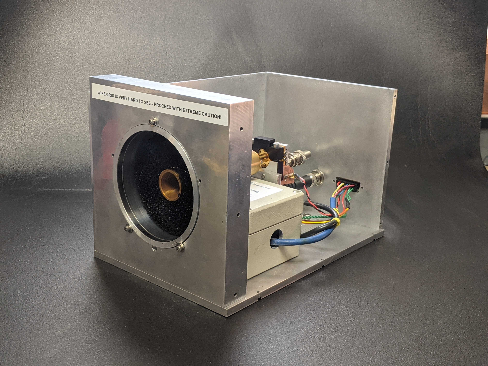
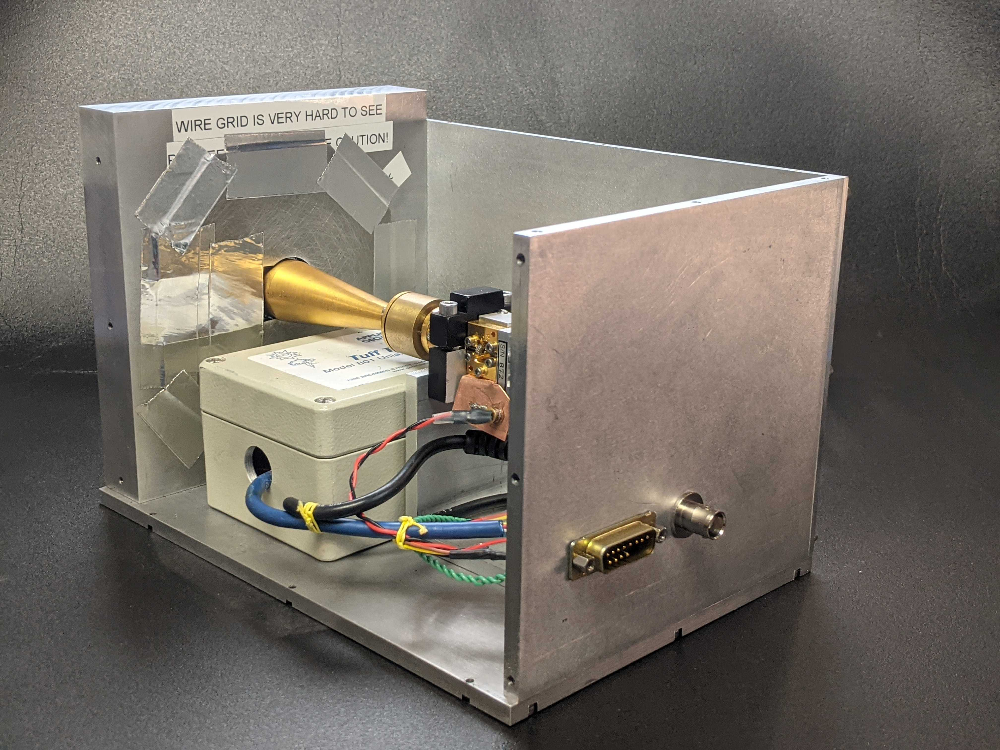

This posting is part of a series which comprises the IPR analysis on BICEP3, see previous postings for more on this. You can find a link to the paper here: .
During the July 2023 collaboration meeting, I showed some work we have been doing in the lab that involves validating our understanding of the RPS using a room-temperature receiver whose polarization angle WRT gravity is well-known. Through these measurements we found evidence that suggests error on the overall polarization angles could be more sensitive to alignment errors than I had originally accounted for during the Jan 2022 RPS calibration campaign on BICEP3. With the help of Annie Polish and a new undergraduate Kane Sjoberg, we are making continual progress on understanding the underlying physics involved. However, we do not anticipate completing the investigation of these mysteries for some time and so I have established a relatively large 0.3° uncertainty on the overall polarization angle to put into my thesis/paper(?). Included with it will be a caveat that this uncertainty is both poorly understood not well quantified -- and it would not necessarily add in quadrature with the other errors in our budget.
In a previous posting we outlined our strategy for unblinding the birefringence analysis to real CMB data which included wrapping up these sorts of mysteries before moving forward. Given that resolving the investigation on the benchtop is no longer on the same timeframe as completing my thesis, this approach no longer seems appropriate for wrapping this birefringence analysis. Despite the large uncertainty surrounding the absolute angle, we have developed cross checks (e.g. Δα jacks) that, at least with the relative angles, give us a lot of confidence in the techniques we've developed. As such, we would like to discuss our options for including the overall angle from real CMB data (or not) in my thesis and in the paper.
In another posting, Annie is putting together a detailed summary of the benchtop measurements so I will only summarize them here. When that posting is complete, I will be sure to reference it here.
We created an ambient-temperature, 95GHz, polarized receiver called the In-Situ Absolute Angle Checker or ISAAC (Figure 1.1). The RF chain of the ISAAC is as follows: wire-grid → BICEP1 90GHz feedhorn → PacMil high-gain GaAs detector diode. The polarization orientation of the ISAAC is characterized in the same way that the RPS is: the angle of the wires are registered to a reference surface and then that reference surface is registered to gravity using a TuffTilt tiltmeter.
The main idea behind these benchtop measurements is that we know the angle of the ISAAC's wire grid w.r.t. gravity to high precision and getting the same angle from observing the RPS with the ISAAC would serve as an end-to-end validation of our understanding of the apparatus.
|  |  |
We get angles from the RPS-ISAAC measurements in similar manner as observations on the telescope. We rotate the RPS from -180° to 180° in 30° increments, recording the apparent amplitude from the ISAAC using a lock-in amplifier to produce modulation curves. We then fit angles to the modulation curves and compare them to the known angle of the ISAAC w.r.t. gravity as given by the tiltmeter.
Measurements between RPS and ISAAC were first carried out at Pole as a cross-check in early 2022 before and after the RPS campaign, but we had difficulty reliably backing out the true angle of the ISAAC from these measurements. This led us to continued measurements on a jig back at Harvard that allows for more repeatable measurements in our ongoing investigation (Figure 1.2).
We found that our trouble with backing out the true ISAAC angle comes, at least in part, from a strong dependence on RPS-derived angles with the alignment of the RPS as it points toward the ISAAC (Figure 1.3). For a given alignment offset in Azimuth we took ten consecutive measurements before moving on to the next offset. We can see that the error on the angle increases up to ~0.3° over a range of 1° in offset.
While the benchtop investigation is still ongoing, the conclusion of the instrumental calibration will include a 0.3° uncertainty on the overall angle to carry forward into the CMB analysis, at least for my thesis. In general, our target total instrumental+CMB analysis overall angle uncertainty has been ~0.1° in order to produce a constraint that is competitive with the current state-of-the-art. Having an error that is 3× higher naturally begs the question on how we should approach including real CMB data in the birefringence analysis as it stands.
We're bound to learn a few things about our CMB analysis from the real data's overall angle that we didn't see in the sims, so there's a good reason to look at the real data even if we don't include it in the paper. On the other hand, it might be beneficial to wait until the benchtop measurements are resolved before unblinding. Whether or not we unblind right now, there might be reason to not include our results in a paper. As such, we've laid out a couple options for consideration.
Options:
Example Thesis/Paper(?) Abstract:
This analysis showcases an end-to-end IPR constraining technique using state-of-the-art CMB polarization data. However, this analysis still possesses a singular outstanding mystery in the instrumental calibration, resulting in a ~0.3° error on the overall angle that is not well understood. Our constraint on the birefringence angle from real CMB data of … should not be considered outside the context of this poorly quantified uncertainty.
Options for the paper:
Example Thesis/Paper(?) Abstract
We choose not to unblind to the overall polarization angle from real CMB data in light of this poorly understood uncertainty in the instrumental calibration of ~0.3°. Instead, we focus primarily on the tests on relative angles from real CMB data that give us a high level of confidence in this calibration technique...
Options for the paper: